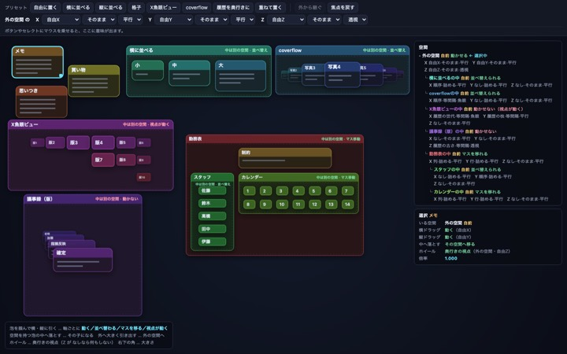
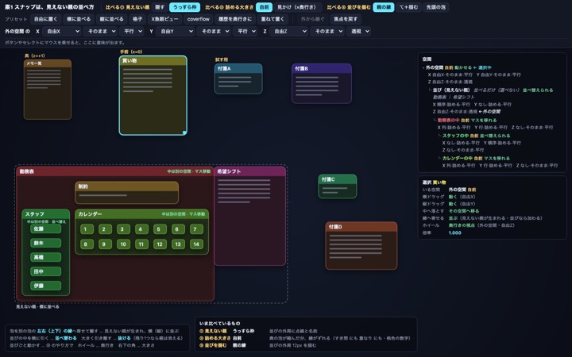
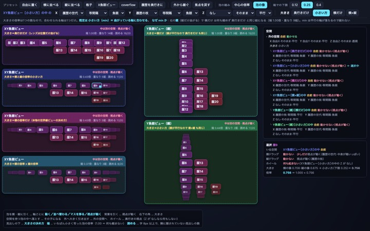
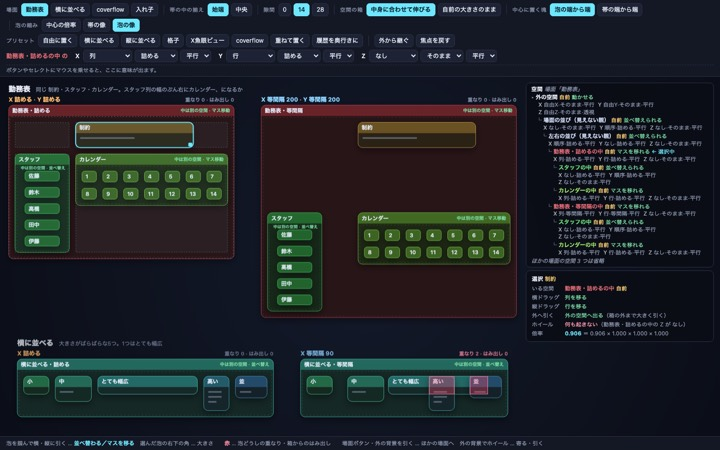
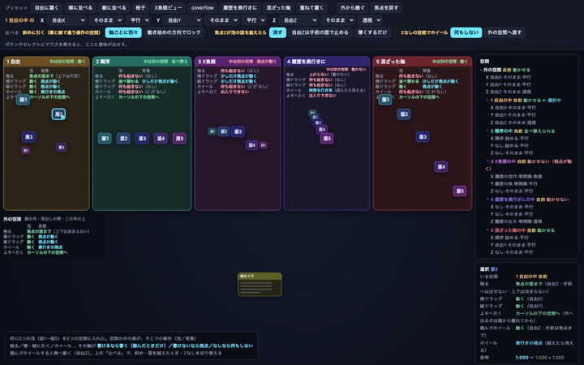
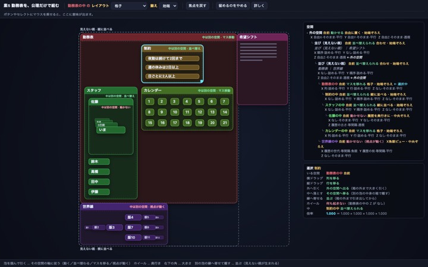
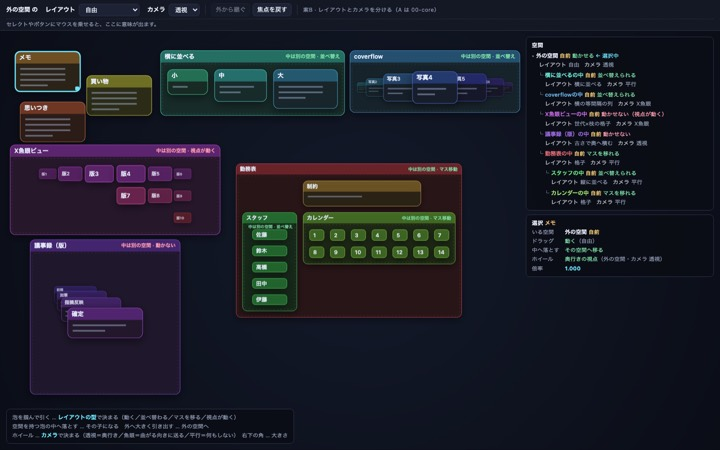

7つの単体プロトタイプ。1案 = 1ファイル、カードをクリックすると開く。 語彙と約束は SPEC.md。
①〜④ は「値 → 見え」を決める。⑤ だけが逆で、「さっきの見え → 値」を書き直す。
泡の見え方は、その泡を入れている親の View で決まる。View は軸（X・Y・Z）ごとに 次元・並べ方・レンズ を持つ。これが入れ子ごとに繰り返される。
泡を掴んで横・縦に引くと、その軸の次元が 書けるなら書く（動く・並べ替わる・マスを移る）／ 書けないなら視点が動く／なしなら何も起きない。ホイールは奥行きの視点。 触った泡は手前へ——Z 軸に書けるならそこへ書く（「最前面」になるのは Z が順序のときだけ。 自由座標では焦点の面まで）。
「A の左に B がスナップ」＝「見えない親が中身を左右に並べている」。隣り合う関係は持たない。 その見えない親は箱も、奥行きも、View も、自分のものは何ひとつ持たない。持っているのは並べ方ひとつだけ。 空間の出入りも、外へたどった窓で数える。
値ごとに帯を作り、帯の中に揃えて置き、塊の中央を空間の中心に。 詰める＝帯の幅はその値の泡の最大、等間隔＝帯の幅は間隔。違うのは帯の決め方だけ。 重ならないことを保証するのは詰めるだけ。泡はその端をレンズに通した像の幅で縮むので、 重なりを作るのはレンズではなく並べ方。
泡の位置は箱の中心。だから中身が変わって箱が伸び縮みしたら、触っていない泡の 見えている場所を保つように、位置を書き直す。別の仕組みではなく、 「位置＝中心」を選んだことから必然的に出てくる補正（切ると、伸びのちょうど半分だけ動く）。
絵をクリックするとプロトタイプが開く。緑の点＝分かったこと、赤の枠＝直せなかったこと。

006つの場面（メモ／横に並べる／coverflow／X魚眼ビュー／議事録／勤務表）が、親の View だけで出るか。
直せなかった root で奥へ1回ホイールすると、同じ面にいる泡が 8個のうち7個 まとめて消える（量を小さくしても1回で消える）。 「奥は一番奥の泡まで」は空にしないだけで、同じ面をまとめて越えるのは止めない。
開く →
01隣り合う関係を持たずに、スナップの体験を親子と View だけで保てるか。
直せなかった 詰める空間への差し込みでは、並びが必ず後ろへ伸びる。留まるのは差し込む所より前（0.00px）と並びの外の全部（0.00px）で、 後ろの泡だけが 差し込んだ泡の幅ちょうど 120.00px 動く。詰めるの意味そのものなので、決まりでは塞がらない。
開く →
02X・Y に別々のレンズを付けたとき、1つの数の倍率を、どの軸の倍率から決めるか。
直せなかった（min の値段） 合わせなかった軸に隙間が空く（鏡で横に最大 38.5px・平均 17.8px。X が平行なのに泡は縦に合わせて縮むため）。 min の粗ではなく「倍率は1つの数・泡は矩形のまま」からの必然で、消すには矩形をやめるしかない。
開く →
03等間隔と詰めるを1つの式で書けるか。どこで破綻するか。
直せなかった 等間隔×魚眼 の重なりは 7 のまま（間隔より広い泡が帯からはみ出す並べ方なので、レンズの写し方では消えない）。 等間隔の「塊」を 泡か帯かも公理だけでは選べない（帯にすると箱が 511 → 634px 片寄る）。トグルのまま。
開く →
04「書けるなら書く／書けないなら視点／なしなら何も起きない」の1文だけで、触る・ドラッグ・ホイールの全部が説明できるか。
直せなかった 「dz<0 は消える」と「Z の焦点は一番奥の泡まで行ける」が合わさると、同じ面に5つ並ぶ外の空間では deltaY 4（焦点Z 0.016）でも 5個消え、見える泡 31 → 1。比べのボタン「自由Zは手前の面で止める」を選ぶと deltaY 100 でも 0個だが、奥の面へ行けなくなる。
開く →
05masa さんが「作れるようになりたい」と言った画面が、特別扱いを足さずに組めるか。
直せなかった 一つだけ履歴を奥行きにすると、その行が高くなる（佐藤 190px → 勤務表の行1 が 378px）。カレンダーは 146px の始端ぞろえなので、 格子の右下に 232px の空きができる。版も 手前2枚しか題が読めない（見える帯 13.8 / 8.5 / 5.7px。 4枚とも読ませるには泡が 300px 以上高く要る）。
開く →
06「型＋カメラ」に分けるよくある作り方（B）と、軸ごとの View（A＝公理）を、同じ道具で数えて比べる。
直せなかった A と B のどちらを採るかは決まっていない。分岐の数では B（44 対 25）、言える範囲では A。 両方そのまま載せてある。
開く →8件。各案の「直せなかった」から。下の案の番号をクリックすると、その案が開く。
止めれば「ホイール1回で同じ面の7個が消える」も「触ると消える」もいっぺんに塞がる （deltaY 100 でも消えた泡 0）。代わりに奥の面へ行けなくなる（奥へ4回ホイールしても焦点 0）。 案4 に比べのボタンがある。masa さん判断待ち。
泡の端から端で測ると端の泡を広げて兄弟が一緒にずれ（−10/−20/−30px）、帯の端から端で測るとずれは 0 になる代わりに 箱が片寄る（勤務表 511 → 634px）。公理だけでは選べずトグルのまま。 「塊を空間のどこに置くか」もまだ無い（いまは必ず中央）。
詰める×魚眼 は「泡の端をレンズに通す」で 0 になったが、等間隔は 7 のまま。 等間隔は間隔より広い泡が帯からはみ出す並べ方なので、レンズの写し方では消えない （中身を見させると、それは等間隔ではなく詰めるになる）。
同じ絵は両方作れる（54個すべて差 0）。機能を1つ足したときの分岐は A ＋2／B ＋1 で数なら B。 ただし「重ねて置く」は A ＝プリセット1行、B ＝6型のどれでもできない。 数と言える範囲が逆を向いている。
留まるのは差し込む所より前（0.00px）と並びの外の全部（0.00px）。後ろの泡だけが 差し込んだ泡の幅ちょうど 120.00px 動く。これは詰めるの意味そのもので、穴ではない。 受け入れるかどうかだけが残っている。
⑤ が効くのは 付け替えと大きさを変えたときだけ。見えない親のほうは「View を選べない」で塞がった （8つのプリセット全部 0.00px）が、体のある泡の View を変えたときの決まりはまだ無い。
切り抜かないと決めたので、箱からはみ出した中身が どちらの箱のものか読めない （左右が同じ題名・同じ色だと赤い破線が交差する）。いまは重なりの数（5／7）だけが頼り。 見分けるには「破れの見せ方」が要るが、それは公理の外。